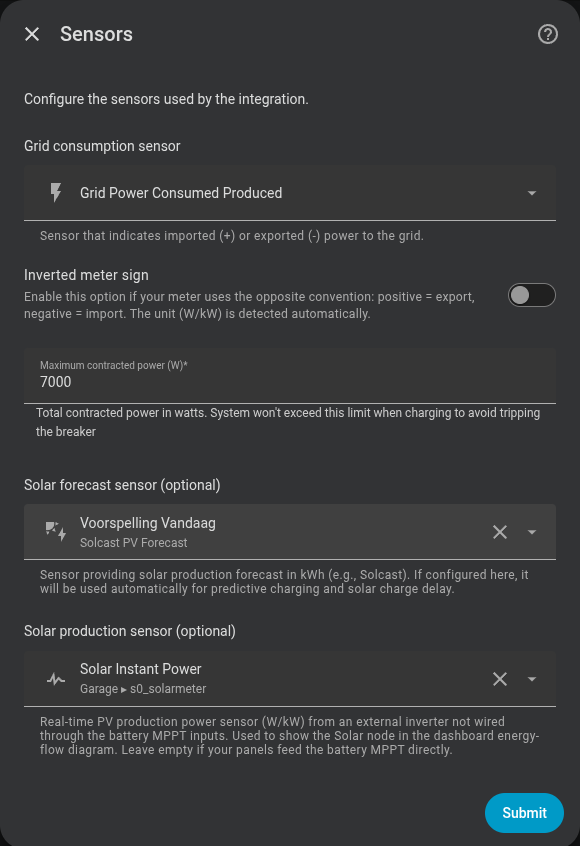

Main sensor¶
The first step configures the global data sources for the integration.

Grid consumption sensor¶
A Home Assistant sensor that measures power exchange with the grid (in W or kW).
Compatible sensors
Any sensor that exposes grid power works: Shelly EM, Shelly EM3, Neurio, smart meter integrations (e.g. sensor.grid_power).
Update frequency
The sensor should update as fast as possible. The controller is event-driven — it recalculates each time this sensor publishes a new value — so the sensor's update rate is the control rate: a faster sensor means a faster, more accurate response. (A 2-second watchdog still runs the cycle if the sensor goes quiet.)
Home consumption can vary by several kilowatts in fractions of a second (appliance start-ups, oven, washing machine…). Slow sensors are supported, but their delay means that the controller may react to a situation that has already changed, reducing regulation quality.
Recommended: 1–2 second update interval. Shelly devices do not provide this MQTT cadence natively. A script must run on the device; see the Shelly Pro 3EM MQTT scripts reference for examples.
Omnibattery always follows the latest published value until it is more than 65 seconds old, regardless of the sensor's polling rate. Sensors that repeatedly update every 10 seconds or more trigger one Home Assistant Repairs warning per integration run; no recurring log warning is emitted. If the sensor is fast after the next restart, the persisted Repair is cleared after three updates.
Automatic kW detection¶
If the sensor's unit_of_measurement attribute is kW, the integration multiplies the value by 1000 automatically.
Inverted sign¶
Enable "Inverted meter sign" if your sensor uses the opposite convention:
| Convention | Import | Export |
|---|---|---|
| Standard (default) | Positive value | Negative value |
| Inverted | Negative value | Positive value |
Leave it disabled if you are unsure.
Off-grid power sensor (optional)¶
You can configure a second W/kW sensor for the backed-up circuit. It must be a different entity from the normal grid consumption sensor. Saving it exposes the system Off-grid Meter Mode switch both as a Home Assistant entity and on the dashboard Controls tab.
The Off-grid meter sign inverted setting is independent from the primary meter sign. Enable it when the off-grid sensor reports consumption as negative; it applies only while this mode is active.
While the switch is on, Omnibattery uses the second sensor as the source for PD and for derived consumption and grid import/export statistics. Turning it off returns to the primary sensor. Switching sources breaks the current integration interval so a jump between the two meters is not counted as energy. Batteries supplying power through their own off-grid port remain excluded from PD; the other available batteries use the alternate sensor.
This switch only changes the data source. It does not enable the physical off-grid/EPS port, change the battery mode, or write any backup-output setting; the user must enable that port separately.
Maximum contracted power¶
The contracted power of your grid connection, in W (default 7000).
The integration caps battery charging so that projected grid import never exceeds this limit, preventing the main breaker from tripping. This applies in every mode — normal setpoint control, a positive target/offset, hourly net balance and predictive grid charging — not only while charging from the grid on a schedule.
max_contracted_power protects the installation in two complementary ways:
- It is a hard ceiling for battery charging in every mode.
- While a predictive grid-charging slot owns the batteries, it is also the emergency import limit. Omnibattery first stops charging and waits for settled telemetry; if physical import still exceeds the limit, it discharges only the confirmed excess.
This emergency protection does not require Capacity Protection/Peak Shaving to be enabled. Peak Shaving is a separate optional reserve strategy with its own configurable limit. Outside a predictive charging slot, normal PD continues to regulate towards its configured grid target. See Household demand during predictive charging.
Solar forecast sensors (optional)¶
For new configurations, select the sensor providing the solar production remaining today in kWh or Wh. This value is used directly for intraday decisions, without subtracting measured production again.
The whole-day forecast field remains available for untouched legacy entries. Saving Remaining Today replaces and removes that legacy field, resolving the transition Repair. Existing installations can continue working until their sensor is changed.
Configuring it here makes it available to:
- Predictive charging (Time Slot and Dynamic Pricing modes)
- Solar charge delay
You can also leave it blank and configure it later from the Sensors section of the integration options.
Solar production sensor (optional)¶
This is the real-time PV production power sensor (W or kW) from an external invertor not wired through the battery MPPT inputs. It is used to show the Solar node in the dashboard energy-flow diagram. Leave empty if your solar panels feed the battery MPPT directly.
Home consumption (derived automatically)¶
There is no household consumption sensor field in setup — the integration derives your total home consumption from sensors it already has:
Home consumption = Grid power + Battery AC power + Solar power
This is the value shown by the energy-flow diagram and the sensor.marstek_venus_system_home_consumption sensor, and it feeds the 7-day history used by predictive charging and charge delay. Accumulation runs for the full local day, including predictive charging windows; the battery's negative AC power cancels grid energy used to charge it. The counter resets at midnight and survives HA restarts.
Grid, solar and battery telemetry are independent and may not describe exactly
the same instant. Immediately after a charge command changes, their temporary
combination can produce an impossible negative or implausibly small home
balance. The live Home Consumption sensor keeps its last coherent value for up
to 15 seconds; if the inputs still disagree, it reports unknown instead of
publishing a false 0 W. The physical daily-energy accumulator applies its own
equivalent validation and breaks the integration interval rather than adding a
fabricated zero. It does not apply predictive external-load exclusions to the
physical dashboard total.
Fast, coherent grid and battery telemetry shortens these transitions. A brief
held or unknown value during an inverter direction change is therefore a
data-quality safeguard, not a request for the battery to discharge.
Forecast total versus solar timeline¶
The forecast sensor is the energy budget. A remaining today sensor is already
future energy and is never reduced by the local production accumulator. Legacy
whole-day (today) sensors use their dated future periods when available, or
the remaining part of the solar curve otherwise; measured past production is
never shifted into later forecast intervals. The
optional real-time production sensor, and readable battery MPPT channels, are
used only to learn the intraday shape; they never replace the forecast total.
When enabled, the temporal selection is provider periods, a mature local solar profile, then the existing sinusoidal curve. A profile does not predict kWh, correct a meteorological forecast, control the inverter, or guarantee output during curtailment.